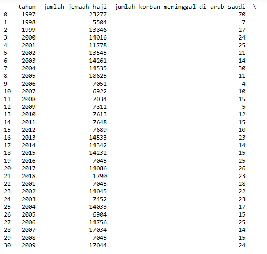
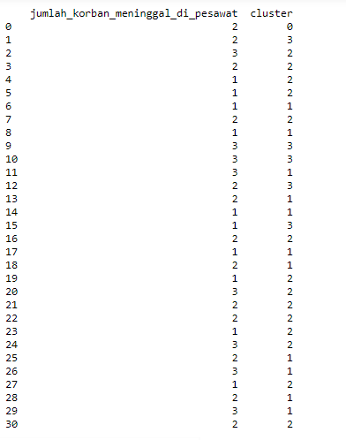
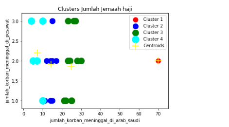

Algoritma K-Means Clustering¶
Pengertian K-Means Clustering¶
K-Means Clustering adalah suatu metode penganalisaan data atau metode data mining yang melakukan proses pemodelan tanpa supervisi (unsupervised) dan merupakan salah satu metode yang melakukan pengelompokan data dengan sistem partisi.
Tahapan K-Means Clustering :¶
- Memilih jumlah cluster awal (K) yang ingin di dibuat.
- Memilih titik secara random sebanyak K, dimana titik ini akan menjadi pusat (centroid) dari masing-masing cluster.
- Dari dataset yand dimiliki, buat dataset yang terdekat dengan titik centroid sebagai bagian dari cluster yang sudah dibuat.
- Lakukan kalkulasi dan tempatkan pusat centroid yang yang baru untuk setiap clusternya.
Langkah-langkah menginstal library :¶
Install pandas
pip install pandas
Install matplotlib
pip install matplotlib
Install Sklearn
pip install sklearn
Install numpy
pip install numpy
Langkah-Langkah implementasi K-Means Clustering :¶
Mengimportkan library untuk mendukung implementasi k means clustering dan tempat penyimpanan file atau simbol yang digunakan.
import numpy as np import matplotlib.pyplot as plt import pandas as pd from sklearn.cluster import KMeans from sklearn.preprocessing import MinMaxScaler
Mengimport dataset yang digunakan untuk pengimplemtasian k means clustering dan mengambil kolom ke 2 dan 3 untuk di eksekusi di python.
dataset = pd.read_csv('Data-Jumlah-Jemaah-Haji-yang-Berangkat-dan-Meninggal-Tahun-1997-2011.csv') X = dataset.iloc[:, [2, 3]].values
Menjalankan k-means clustering ke dataset dan membuat cluster dengan jumlah 4 cluster.
kmeans = KMeans(n_clusters = 4, init = 'k-means++', random_state = 0) y_kmeans = kmeans.fit_predict(X) dataset['cluster'] = y_kmeans print(dataset)
Memvisualisasikan hasil cluster yang sudah dibuat dengan mengambil kolom "Jumlah_korban_meninggal_di_arab_saudi" dan kolom "jumlah_korban_meninggal_di_pesawat".
plt.scatter(X[y_kmeans == 0, 0], X[y_kmeans == 0, 1], s = 120, c = 'red', label = 'Cluster 1') plt.scatter(X[y_kmeans == 1, 0], X[y_kmeans == 1, 1], s = 150, c = 'blue', label = 'Cluster 2') plt.scatter(X[y_kmeans == 2, 0], X[y_kmeans == 2, 1], s = 200, c = 'green', label = 'Cluster 3') plt.scatter(X[y_kmeans == 3, 0], X[y_kmeans == 3, 1], s = 250, c = 'cyan', label = 'Cluster 4') plt.scatter(kmeans.cluster_centers_[:, 0], kmeans.cluster_centers_[:, 1], marker='+', s = 250, c = 'yellow', label = 'Centroids') plt.title('Clusters Jumlah Jemaah haji') plt.xlabel('jumlah_korban_meninggal_di_arab_saudi') plt.ylabel('jumlah_korban_meninggal_di_pesawat') plt.legend() plt.show()
Hasil Implementasi :¶
1. Tampilan dataset :¶


2. Tampilan Plot :¶
